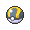

Supremacia do Protesto
Descubra os Khosō criados pelo Cavaleiro, monte sua coleção e sua equipe.
—
Khosōs Existentes
—
Khosōs Descobertos por Você
Destaque
Carregando...
Como funciona
01
Descubra
O Cavaleiro libera criaturas conforme você as encontra na campanha. Importe o arquivo de liberados na Khosōdex para revelá-las.
02
Registre
Adicione à sua coleção tudo o que descobrir. Cada registro guarda elementos, raridade, atributos e história.
03
Combata
Monte uma equipe de até seis e leve seu progresso para qualquer lugar com o Exportar do menu.
Regras do mundo
- Os Khosōs podem ser achados em qualquer lugar.
- Cada Khosō evolui de um jeito diferente (batalhas, confiança, etc.).
- Podem ficar doentes e machucados, mas não podem morrer apenas se forem apagados da existência por algo.
- Pedras de evolução são permitidas, mas não são bem vistas pelos cientistas: você força a evolução e, por isso, o Khosō perde os movimentos que aprenderia naturalmente.